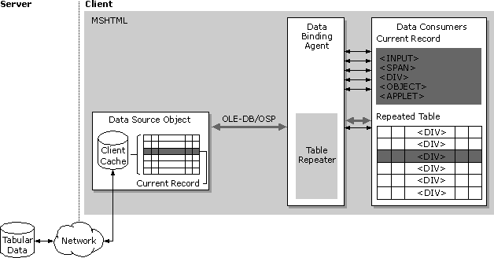

| ||||
Data binding is based on a component architecture consisting of four major pieces—data source objects, data consumers, the binding agent, and the table repetition agent. Data source objects provide the data to a page, data-consuming HTML elements display the data, and the agents ensure that both the provider and the consumer are synchronized. The following diagram illustrates how the components fit together.

To bind data to the elements of an HTML page in Microsoft® Internet Explorer 4.0, a data source object (DSO) must be present on that page. DSOs implement an open specification that leaves it up to the DSO developer to determine the following:
A DSO typically exposes this functionality through an object model accessible to scripts.
The only strict requirement imposed upon a DSO is that it must provide access to its data through the OLE DB  or OLE DB Simple Provider APIs. Because all DSOs provide data access through a standard set of interfaces, MSHTML extends the object model of the DSO with a standard set of properties, methods, and events. It is through this object model that scripts can manipulate the data.
or OLE DB Simple Provider APIs. Because all DSOs provide data access through a standard set of interfaces, MSHTML extends the object model of the DSO with a standard set of properties, methods, and events. It is through this object model that scripts can manipulate the data.
Specifics on adding a DSO to a page are provided below. Information on implementing custom data source objects is available in IE4/MSHTML Data Binding Interfaces.
Data consumers are elements on the HTML page capable of rendering the data supplied by a DSO. Elements include many of those intrinsic to HTML, as well as custom objects implemented as Java applets or ActiveX® Controls. Internet Explorer 4.0 supports HTML extensions to allow authors to bind an element to a specific column of data in a data set exposed by a DSO. Applets and ActiveX Controls support additional binding semantics described below.
Elements support the consumption of either single-valued or tabular data. Single-valued consumers such as INPUT elements consume a single value from the current record provided by a data source. Tabular data consumers such as the TABLE element repeat an entire set of records from a data provider. This is called set binding.
The section on HTML extensions explains the extended attributes that allow Web authors to bind elements to the data supplied by a DSO. For further information on the individual elements that support data binding, see Binding an HTML Element to Data.
The binding and repetition agents are implemented by Mshtml.dll, the HTML viewer for Internet Explorer 4.0, and they work completely behind the scenes. When a page is first loaded, the binding agent finds the DSOs and the data consumers among those elements on the page. Once the binding agent recognizes all DSOs and data consumers, it maintains the synchronization of the data that flows between them. For example, when the DSO receives more data from its source, the binding agent transmits the new data to the consumers. Conversely, when a user updates a databound element on the page, the binding agent notifies the DSO.
To signal the Web author of important changes in the state of the data caused by providers and consumers, the binding agent fires a variety of scriptable events.
The repetition agent works with tabular data consumers such as the HTML TABLE element to repeat the entire data set supplied by a DSO. Note that individual elements in the table are synchronized through interaction with the binding agent.
To enable Web authors to add data binding to their pages, Internet Explorer 4.0 provides support for several new HTML attributes. All data binding-related HTML attributes correspond to a similarly named property in the DHTML Object Model. The following section introduces these attributes and describes their use.
The key to data binding is connecting a data source object to a data consumer. To achieve a binding between a data source object (DSO) and a data consumer, Internet Explorer 4.0 extends HTML to support the following attributes.
| DATASRC | Specifies the identification of the DSO to which a consumer is bound. |
| DATAFLD | Identifies the specific column exposed by the DSO to which the element is bound. |
| DATAFORMATAS | Indicates how the data in the specified column should be rendered. |
| DATAPAGESIZE | Indicates how many records are displayed in a table at once. |
Bound elements fall into two specific categories:
The binding agent takes a single value from the current record of a data source and passes it to a single-valued consumer. The repetition agent works with the binding agent to pass the entire set of records to a tabular data consumer.
By specifying the DATASRC and DATAFLD attributes on a single-valued data consuming element of a Web page, the Web author fully specifies the binding of an element to data. By specifying DATAFORMATAS on a single-valued element, the Web author indicates how the data should be interpreted. DATAPAGESIZE allows the author to restrict the number of records that are displayed by a tabular consumer. All these properties can be set at run time through the Dynamic HTML object model.
Here's a sample declaration for a single-valued data consuming element that might appear on an HTML page.
<SPAN DATAsrc=#dsocomposer DATAFLD=compsr_first></SPAN>
The DATASRC attribute in this example is set to the ID (dsoComposer) of a data source object (DSO) embedded on the page. The DATAFLD is set to the name of a column in the data set provided by the DSO. For this binding to succeed, the data set retrieved by the DSO must contain a column named "compsr_first".
Click the Show Me button to see a working example.
The following example shows how a table, a tabular data consumer, can be bound to a data source object. The repetition agent uses the table row (TR) in the table body as a template. As the DSO identified in this example as "dsoComposer" supplies each record in the data set, the template including the DIV is repeated, until all composers' first names are displayed.
<TABLE DATAsrc=#dsocomposer>
<TR><TD><DIV DATAFLD=compsr_first></DIV></TD></TR>
</TABLE>
Click the Show Me button to see a working example that uses the TDC to display a table of composers, including their first and last name, date of birth and death, and country of origin.
The data supplied by a DSO can be in a variety of formats, and the page author can use the DATAFORMATAS attribute on single-valued consumer elements that support the attribute to indicate how the data should be rendered. In Internet Explorer 4.0, HTML and TEXT are the valid values for this attribute.
<MARQUEE DATAsrc=#dsoadvertisement DATAFLD=banner
DATAFORMATAS=html>
</MARQUEE>
The previous example describes a MARQUEE that calls upon a data source object that supplies various banners for display in a page. Click the Show Me button to see how a timer can be used to randomly select and display an advertisement supplied by a data source.
When binding a TABLE to a data source, all the records in the data set will be displayed by default. If the data set is large, the page may grow beyond what is visible to the user. In addition, any content positioned below the table will get pushed off the screen. The DATAPAGESIZE attribute can be applied to a TABLE to specify the maximum number of records that should be displayed at any one time. To enable the user to move to the next and previous pages of records viewed in the table, Web authors can use the nextPage and previousPage methods exposed by the TABLE object in the DHTML Object Model. Authors can also change the page size of the table at run time by setting the dataPageSize property. Click the Show Me button to see how it works.
In addition to limiting table size, Web authors should investigate the specific functionality exposed by the DSO they have chosen for use on their HTML page. Both the TDC and RDS provide filtering capabilities.
Did you find this topic useful? Suggestions for other topics? Write us!
© 1999 Microsoft Corporation. All rights reserved. Terms of use.